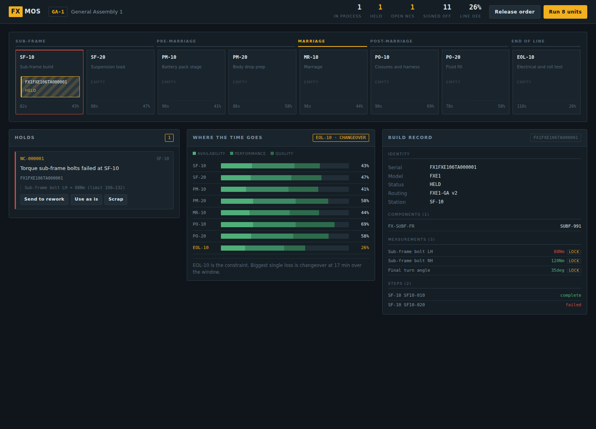

If the answer is hours, or a person going through folders, you are one audit away from losing a contract. FX MOS produces it in milliseconds — every component lot, every measurement, against the specification that was in force on the day that unit was built.

A unit held at SF-10. The hazard stripes mean the interlock has it. The panel names the failing measurement and its window — sub-frame bolt at 88 Nm against a 108–132 limit. Nothing behind it moves until a supervisor dispositions the hold, and the disposition goes on the permanent record.
Most small and mid-size manufacturers run production on a printed traveller, a shared spreadsheet, and one person who remembers everything. It holds together right up to the moment something goes wrong.
A customer wants the build record for a serial they received nine months ago. You have the traveller somewhere. Probably.
A supplier calls: one heat of castings was out of spec. Which units contain it? Without genealogy, containment is everything you shipped that quarter.
You are asked for first-pass yield. You give a figure. Everyone in the room knows it is an estimate, including you.
Seven functions. Each one exists because a plant loses money without it.
| Function | What it means on the floor |
|---|---|
| Traceability | Every unit carries a birth certificate: component serials and lots, every measurement with the spec window in force, every step and who ran it. Queryable in both directions — from a unit to its parts, and from a bad lot to every unit containing it. |
| Process interlocking | A unit cannot advance if a critical bolt was not torqued, a part was not scanned, or a test was skipped. The block is physical in effect: it holds the unit and tells the operator exactly what to fix. |
| Production control | Units are dispatched station by station against a released routing. The system knows where everything is, and what is blocking each one. |
| Quality management | A failure opens a non-conformance automatically and holds the unit. Closing it requires a disposition — rework, use as is, deviation or scrap — and a written resolution. Nothing leaves the line on a shrug. |
| Process data logging | Torque, angle, resistance, volume, cycle time. Stored with the limits that applied at the time, so the record stays meaningful after the spec changes. |
| Paperless work instructions | The operator sees the instruction for the step in front of them, from the routing version that unit is being built under. |
| OEE and constraint | Availability, performance and quality per station, with the loss broken out — down, starved, blocked, changeover, speed, scrap. The line's number is its bottleneck, not the average, because a line runs at the pace of its worst station. |
Zones, stations, and a routing that moves in one direction. The reference configuration is a vehicle progression, but the model is generic — any discrete assembly with serialised units and gated progression fits it.
New process step? Clone the released routing, add the step with its measurement limits, validate, release. Live for the next unit started. Units already on the line finish under the version they began with.
The full source ships with the licence. Your quality team can audit it, validate it against your own procedures, and extend it. You are not taking our word for how a gate decides.
Two bugs found by running it, not by reading it.
The first: a unit that failed a torque check, went through rework and passed retest was still blocked — by its own history. The line plugged behind it. The fix separates the audit record, which must never be rewritten, from current state, which is what the interlock reads.
The second: a station that ran for 45 minutes and produced nothing was reported as a speed loss. That sends a reliability engineer to retune a machine that was never the problem.
Both are in the commit history with named regression tests. We would rather show you that than a feature list.
Python, FastAPI, SQLAlchemy. Runs on SQLite for a pilot, PostgreSQL for production. Deploys on your own hardware — your quality records never have to leave your plant.
Not per seat. Factories run shifts, and per-seat pricing makes plants ration access — which is how a system stops being used.
Implementation is quoted separately and billed as a fixed fee: modelling your line, loading your routings and specification limits, integrating your tools, and training your supervisors. That work is where a MOS succeeds or fails, and we would rather price it honestly than bury it in a licence.
Published deliberately. You will find these out in week two of a pilot anyway, and it is cheaper for both of us if you know now.
Not a demo request form. Describe one line — how many stations, what you build, and what happens today when a customer asks for a build record. We will tell you honestly whether this fits.
We reply to every message from a real manufacturer within two working days.